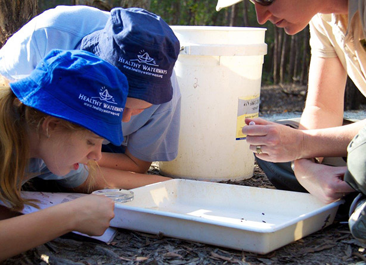

About the Freshwater Macro invertebrates App
Many people would be unaware of the diversity of invertebrate fauna that inhabits our freshwater streams, creeks, and wetlands, yet in every creek, a community of unusual creatures is sure to persist. The community could include unobtrusive worms, menacing yabbies, microscopic zooplankton or prehistoric water scorpions, but no matter how clean or dirty, how pristine or polluted, from an ecological perspective waterways are busy places.
Although they are often referred to collectively (and somewhat simplistically) as "bugs", the fact that freshwater invertebrates are widespread in all kinds of waterways means they can tell us a great deal about ecosystem health. This App aims to provide the user with an introduction to this intriguing world, with specific consideration given to the needs of both primary and secondary students. Freshwater is a context that can be applied to multiple year levels in the Australian Curriculum: Science
Whilst not including all species that could be sampled, it does cover most of the common invertebrates that may be encountered in freshwater environments. The App should be used in conjunction with other test methods, including physical and chemical water properties, when being used to make determinations in relation to water quality.
When sampling, all ‘bugs’ should be returned to the waterway where they were obtained, and care taken to minimise impact on other plants and animals. Doing so helps to ensure the continuation of these unique ecosystems.
Dr Adam Kerezsy
(Aquatic ecologist for Bush Heritage Australia and the Australian Rivers Institute;
author of Desert Fishing Lessons Adventures in Australia’s Rivers)
http://adamkerezsy.com/